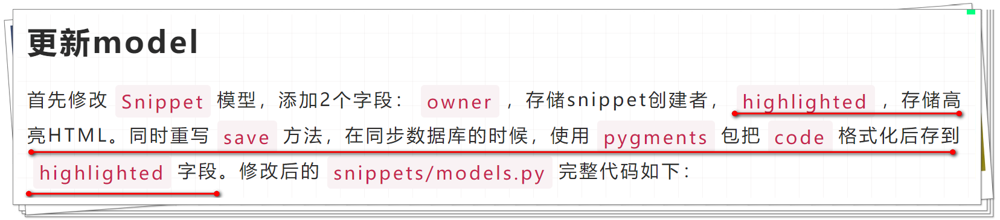

【Django】DRF使用超链接API实现真正RESTful¶

很多API并不是真正的实现了RESTful，而应该叫做RPC (Remote Procedure Call 远程过程调用)，Roy Fielding曾经提到了它们的区别，原文如下：
I am getting frustrated by the number of people calling any HTTP-based interface a REST API. Today’s example is the SocialSite REST API. That is RPC. It screams RPC. There is so much coupling on display that it should be given an X rating.
What needs to be done to make the REST architectural style clear on the notion that hypertext is a constraint? In other words, if the engine of application state (and hence the API) is not being driven by hypertext, then it cannot be RESTful and cannot be a REST API. Period. Is there some broken manual somewhere that needs to be fixed?
— Roy Fielding
https://roy.gbiv.com/untangled/2008/rest-apis-must-be-hypertext-driven
大概意思是，如果应用状态引擎（API）不是超文本驱动的，那么就不是RESTful。
我的理解是，像超文本一样携带一个地址，可以寻址定位信息，如超文本的link属性。
超链接（Hypermedia）API¶
Hypermedia指的是，返回结果中提供链接，连向其他API方法，使得用户不查文档，也知道下一步应该做什么。比如，当用户向api.example.com的根目录发出请求，会得到这样一个文档：
{"link": {
"rel": "collection https://www.example.com/zoos",
"href": "https://api.example.com/zoos",
"title": "List of zoos",
"type": "application/vnd.yourformat+json"
}}
上面代码表示，文档中有一个link属性，用户读取这个属性就知道下一步该调用什么API了。rel表示这个API与当前网址的关系（collection关系，并给出该collection的网址），href表示API的路径，title表示API的标题，type表示返回类型。
创建api_root的Endpoint¶
回到教程的例子。在前面我们已经为snippets和users创建了Endpoint，现在来创建根目录的Endpoint，编辑snippets/views.py：
from rest_framework.decorators import api_view
from rest_framework.response import Response
from rest_framework.reverse import reverse
@api_view(['GET'])
def api_root(request, format=None):
return Response({
'users': reverse('user-list', request=request, format=format),
'snippets': reverse('snippet-list', request=request, format=format)
})
reverse()函数用来返回snippets/urls.py中viewname对应的url，如path('users/', views.UserList.as_view(), name='user-list')。
然后添加到snippets/urls.py中：
path('', views.api_root),
创建SnippetHighlight的Endpoint¶
还记得在上篇文章中提到的Snippet.highlighted字段么：

我们现在为它创建Endpoint，继续编辑snippets/views.py：
from rest_framework import renderers
from rest_framework.response import Response
class SnippetHighlight(generics.GenericAPIView):
queryset = Snippet.objects.all()
renderer_classes = [renderers.StaticHTMLRenderer]
def get(self, request, *args, **kwargs):
snippet = self.get_object()
return Response(snippet.highlighted)
然后添加到snippets/urls.py中：
path('snippets/<int:pk>/highlight/', views.SnippetHighlight.as_view()),
因为
snippet.highlighted不是JSON而是HTML，所以用[renderers.StaticHTMLRenderer]返回预渲染的（pre-rendered）HTML。
HyperlinkedModelSerializer¶
在Web API设计中，一般有以下几种方式来表示实体之间的关系：
主键
超链接
关系实体（the related entity），唯一标识符字段（a unique identifying slug field）
关系实体，默认字符串（the default string representation）
关系实体，嵌入到父类中（the parent representation）
其他自定义
前2个比较熟悉，后面几个有点不太懂，我理解是类似于数据库的关联关系表。
DRF支持以上所有方式，这里我们用DRF的HyperlinkedModelSerializer来实现真正的RESTful。在snippets/serializers.py中把我们之前的代码：
class SnippetSerializer(serializers.ModelSerializer):
owner = serializers.ReadOnlyField(source='owner.username')
class Meta:
model = Snippet
fields = ['id', 'title', 'code', 'linenos', 'language', 'style', 'owner']
class UserSerializer(serializers.ModelSerializer):
snippets = serializers.PrimaryKeyRelatedField(many=True, queryset=Snippet.objects.all())
class Meta:
model = User
fields = ['id', 'username', 'snippets']
修改为：
class SnippetSerializer(serializers.HyperlinkedModelSerializer):
owner = serializers.ReadOnlyField(source='owner.username')
highlight = serializers.HyperlinkedIdentityField(view_name='snippet-highlight', format='html')
class Meta:
model = Snippet
fields = ['url', 'id', 'highlight', 'owner',
'title', 'code', 'linenos', 'language', 'style']
class UserSerializer(serializers.HyperlinkedModelSerializer):
snippets = serializers.HyperlinkedRelatedField(many=True, view_name='snippet-detail', read_only=True)
class Meta:
model = User
fields = ['url', 'id', 'username', 'snippets']
其中ModelSerializer换成了HyperlinkedModelSerializer，后者的区别如下：
默认不包含
id字段包含
url字段，用HyperlinkedIdentityField表示源码：
serializer_url_field = HyperlinkedIdentityField关系用
HyperlinkedRelatedField表示，而不是PrimaryKeyRelatedField源码：
serializer_related_field = HyperlinkedRelatedField
由于用了HyperlinkedModelSerializer，SnippetSerializer和UserSerializer的url字段默认指向的是'{model_name}-detail'
url pattern，这是DRF定义的，在示例中就是'snippet-detail'
和'user-detail'。新增的highlight字段和url字段是一样的类型，它指向的是'snippet-highlight'，而不是'snippet-detail'。
修改url pattern¶
既然已经提到了url pattern，那么在snippets/urls.py中修改一下：
from django.urls import path
from rest_framework.urlpatterns import format_suffix_patterns
from snippets import views
## API endpoints
urlpatterns = format_suffix_patterns([
path('', views.api_root),
path('snippets/', views.SnippetList.as_view(), name='snippet-list'),
path('snippets/<int:pk>/', views.SnippetDetail.as_view(), name='snippet-detail'),
path('snippets/<int:pk>/highlight/', views.SnippetHighlight.as_view(), name='snippet-highlight'),
path('users/', views.UserList.as_view(), name='user-list'),
path('users/<int:pk>/', views.UserDetail.as_view(), name='user-detail')
])
name就是在
serializers.py和views.py中用到的。
添加分页¶
REST设计基本原则提到了：处理好分页。DRF添加分页的方式很简单，编辑tutorial/settings.py文件：
REST_FRAMEWORK = {
'DEFAULT_PAGINATION_CLASS': 'rest_framework.pagination.PageNumberPagination',
'PAGE_SIZE': 10
}
小结¶
我之前是在学SpringBoot的时候了解过RESTful
API的超链接API，文章开头的那一段介绍就是当时写的笔记，DRF提供了HyperlinkedModelSerializer来实现，还是比较好理解的，其中的细节需要在实战中再多多熟悉。